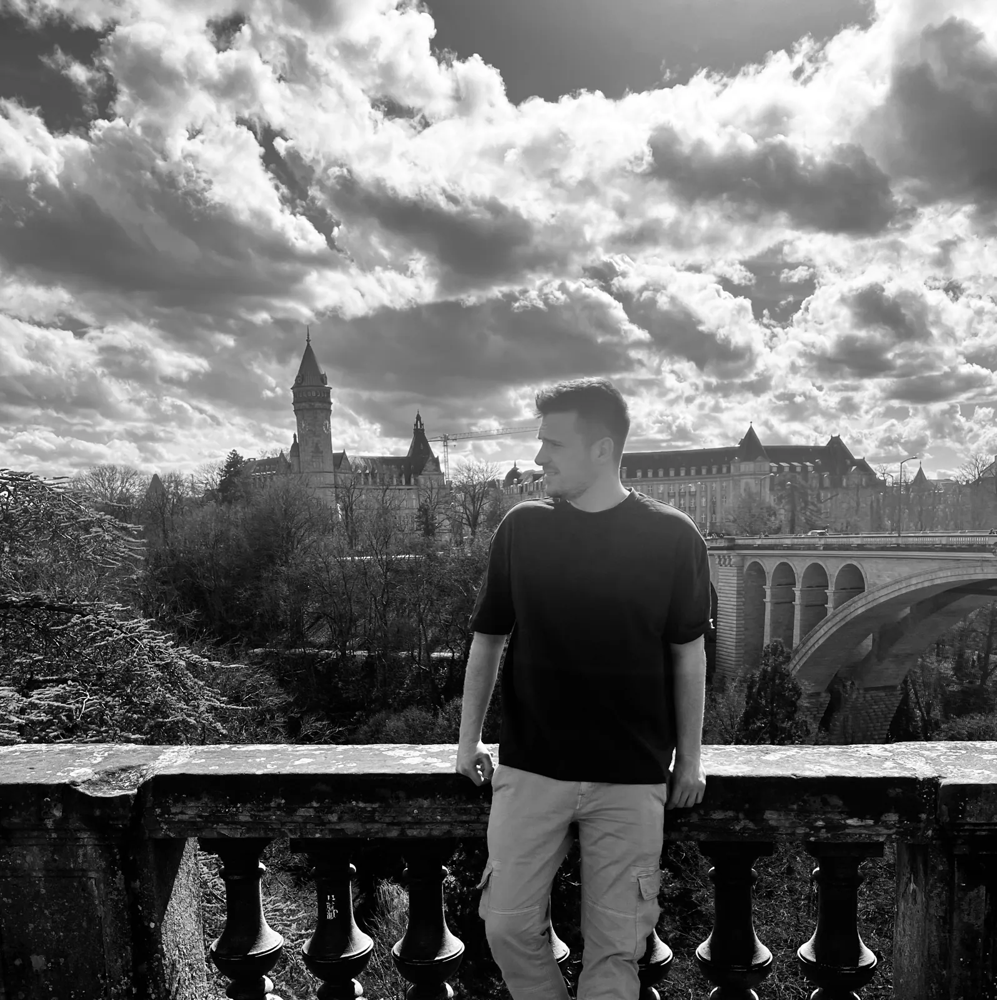
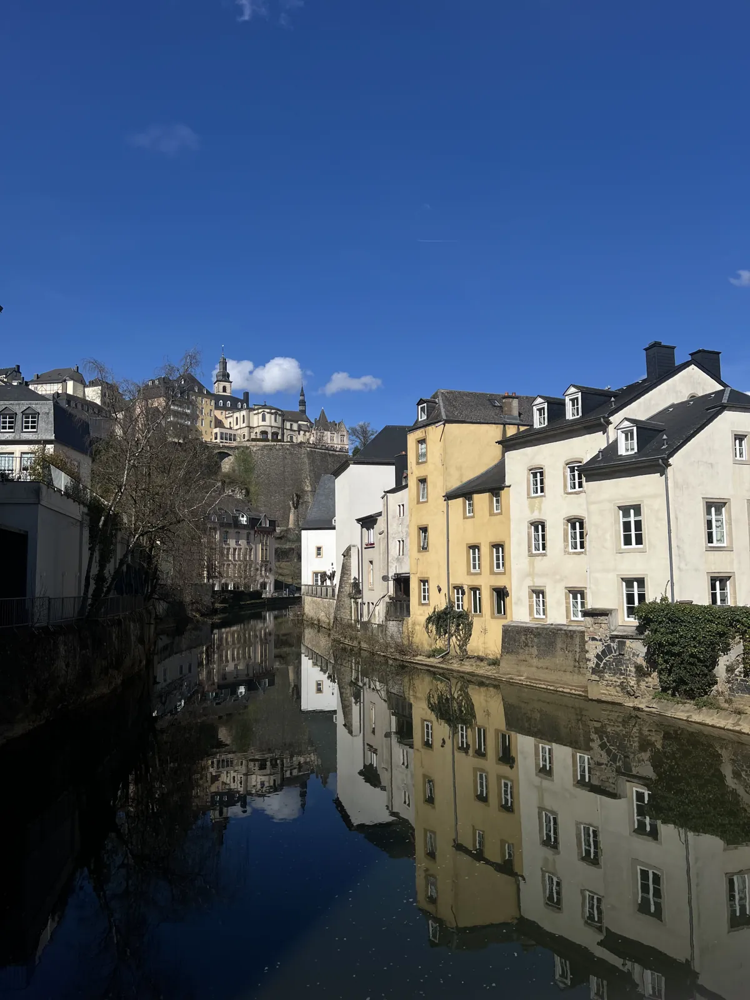

🇱🇺 Luxembourg City Guide: 13 places – Pont Adolphe, Grund, casemates, free public transport & Mullerthal

Table of contents
Luxembourg is often underrated as a transit country. Yet its capital hangs like a fortress above a gorge: the upper town on top and the village by the river in the Grund below. Public transport has been free since 2020, so a day trip is worthwhile even without a car.
This guide shows the must-sees, hidden gems and the smartest way around town. Prices and times are guidelines (2026).
🗺️ Map: all 11 places
My story in Luxembourg City
I was in Luxembourg in March 2025 – under clouds that looked as if someone had ordered them specially for a black-and-white photo. From the edge of the upper town you get bridge, gorge and the city’s towers in a single picture. Down by the Alzette lies the Grund: colourful houses reflected in the river, fortress walls towering above you. It feels like a village in the middle of a capital. In the evening, when the Grand Ducal Palace is lit up, the lanes grow quiet – and the city seems even smaller than it is.

This guide contains affiliate links (GetYourGuide, Omio). If you book through them I earn a small commission – you never pay a cent more. Prices and opening hours change – double-check before you go.
🆓 Free things to do
5 places in Luxembourg City you can enjoy without an entry fee or completely free (for some, only a part costs extra, e.g. a tower or museum):
At a glance
Getting to Luxembourg and around
Luxembourg is easy to reach on the rail line from Germany (Trier, Koblenz), Belgium and France. Since 2020 public transport throughout Luxembourg is free – bus, tram and second-class train. A day trip is therefore worthwhile even without a car. The airport lies a few kilometres from the centre, bus and tram link it to the city.
My tip: bring comfortable shoes – it is constantly uphill and downhill between upper and lower town. For comfort use the free panoramic lift in Pfaffenthal.
1. Must-sees
Pont Adolphe🆓 Free to experience
The stone arch bridge from 1903 spans the Pétrusse valley. From the edge of the upper town you get bridge, gorge and the city’s towers in a single picture.
The Grund🆓 Free to experience
Down by the Alzette lies the Grund, the old quarter of the lower town. Colourful houses are reflected in the river, fortress walls tower above you. The Neumünster Abbey is here too, a cultural centre with a café.
Bock Casemates
A sprawling network of tunnels in the rock. After the Treaty of London in 1867 the fortress was largely razed, the casemates stayed. Admission is about €11, visit time 20–30 minutes; stairs are partly narrow.
Place d’Armes & Grand Ducal Palace
Place d’Armes is the central square of the upper town with cafés and street music. The Grand Ducal Palace lies in the old town; in summer you can visit it on tours (check dates beforehand).
Come in the late afternoon and have a drink on the square.
Tip: Come in the late afternoon.
Notre-Dame Cathedral🆓 Free to experience
Notre-Dame Cathedral from the 17th century is late Gothic with Renaissance elements. Inside there is a crypt with tombs of the ruling family. The visit is free (check times beforehand).
Plan 20 to 30 minutes.
Tip: Plan 20 to 30 minutes.
Pétrusse valley & walking paths
The Pétrusse valley is a green gorge with paths, bridges and views of the fortress walls. A walk connects the upper town with the Grund. In summer there are gardens and events.
Walk down and take the lift back up.
Tip: Walk down and take the lift back up.
2. Hidden gems
Corniche – Europe’s most beautiful balcony💎 Hidden gem🆓 Free to experience
The path on the old city wall above the Grund is often called Europe’s most beautiful balcony. From here you see abbey, river and fortress walls – and it is much quieter in the evening.
Pfaffenthal panoramic lift💎 Hidden gem🆓 Free to experience
A glass lift that links the upper town with Pfaffenthal – free, with a glass-floor viewing platform at the top.
The lit-up palace in the evening
In the evening, when the Grand Ducal Palace is lit up, the lanes grow quiet – and the city seems even smaller than it is.
Mudam
The modern art museum in Parc Dräi Eechelen: modern architecture and changing exhibitions. A matter of taste, but the building is impressive.
Mullerthal – Little Switzerland💎 Hidden gem
The Mullerthal in eastern Luxembourg is an area with rocks, gorges and forests and good for hiking. The Mullerthal Trail leads through the landscape; in Echternach there is a basilica and an abbey quarter. You reach the region by bus or rental car (check timetables beforehand).
Plan a full day.
Tip: Plan a full day for hiking.
Vianden Castle💎 Hidden gem
Vianden Castle in the north is one of the largest castles in Western Europe and towers over the town. It has been restored and can be visited; there is also a chairlift. A good day trip (check times and prices beforehand).
Plan half a day.
Tip: Plan half a day and take the chairlift.
Luxembourg cuisine: judd mat gaardebounen & bouneschlupp
The national dish judd mat gaardebounen consists of smoked pork neck with broad beans and potatoes. With it come bouneschlupp (bean soup), gromperekichelcher (potato fritters) and Moselle wines. Prices change; ask beforehand.
Try traditional food in smaller places.
Tip: Try traditional food in small places.
What makes Luxembourg special
Luxembourg is the only grand duchy in the world, has three official languages and in 2020 was the first country with free bus and train for everyone. In 963 Count Siegfried acquired the Bock rock – the beginning of the city. Burgundians, Spaniards, French and Austrians extended the fortress until it was called the “Gibraltar of the North”. Today Luxembourg is a founding member of the EU and home to important EU institutions.
📍 Save this guide to Google Maps
1. Quick: open as a route
2. Permanent: as your own map (2 minutes)
- Download the file with all pins (KML button below).
- Open Google My Maps → “Create a new map” → “Import” → choose the file.
- Done – every place sits exactly where it should, with number, tip and a link back to the guide.
- In the Google Maps app the map appears under “Saved” → “Maps”, also on the go.
⬇️ All pins for Google Maps (KML) ⬇️ Download place list (CSV)
3. Save one by one
Your plan
Day 1: One day in Luxembourg
- Morning – Pont Adolphe and upper town
- Midday – Corniche and descent into the Grund
- Afternoon – Bock Casemates, Neumünster Abbey
- Late afternoon – Pfaffenthal panoramic lift
- Evening – lit-up palace, quiet lanes
FAQ
Is public transport in Luxembourg really free?
Yes, since 2020 bus, tram and train (2nd class) are free nationwide.
Is one day enough in Luxembourg City?
Yes, for the highlights. If you add museums and the evening mood, stay two days.
Is Luxembourg expensive?
Yes, especially food and accommodation. The free transport helps save money.
🗺️ All places on my map → More guides and reels on Instagram: @hiddengem.atlas
Share this guide: On WhatsApp